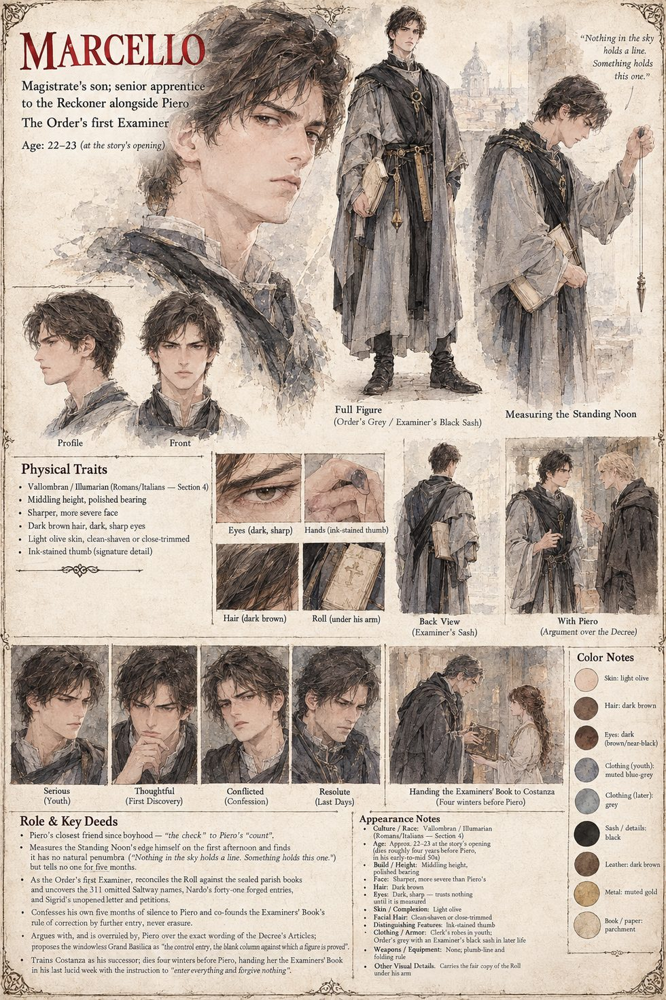

Marcello
Magistrate's son · senior apprentice · the Order's first Examiner · 22–23 at the story's opening
A magistrate's son with an ink-stained thumb and an unshakable conviction that anything which cannot be reconciled has not, in any meaningful sense, happened. He is the friend and the check of Piero. On the first afternoon of the Standing Noon he is first to the northern edge with a plumb-line and a folding rule, finds a boundary with no penumbra, and writes in the margin of his book Nothing in the sky holds a line. Something holds this one, showing it to no one. At the Saltway Gate he privately suspects that the missing three hundred and eleven are no more than a clerical error, and says only that the Roll is the one rule that has held.
Named the Order's first Examiner, he reconciles the Roll against the sealed parish books and finds the omitted column, Nardo's forty-one forged names, and the unopened letter under the Reckoner's paperweight. He lays them before Piero with his own confession of five months' silence, and founds the Examiners' Book on its one rule, that nothing is erased and everything is appended. He argues the Decree's clauses with Piero, proposes the windowless Basilica as a control entry, and writes beside the lens We have built the wrong instrument, and named it for the right miracle. He hands the book to Costanza in his last lucid week, four winters before Piero dies.
“We do not erase it, Piero. We append.”